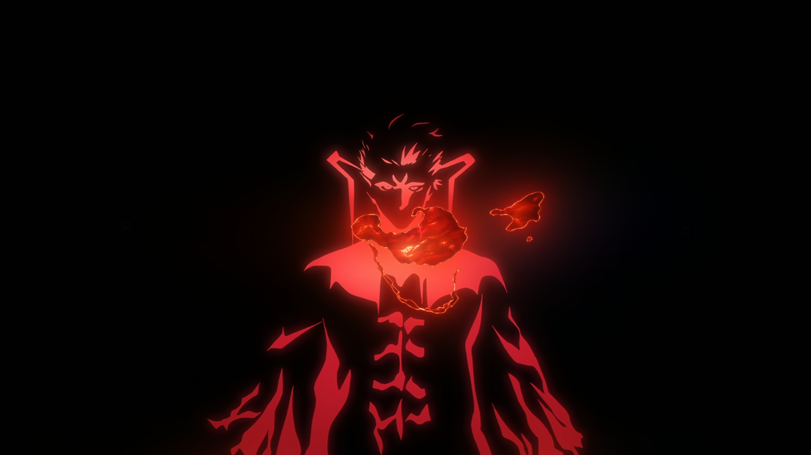
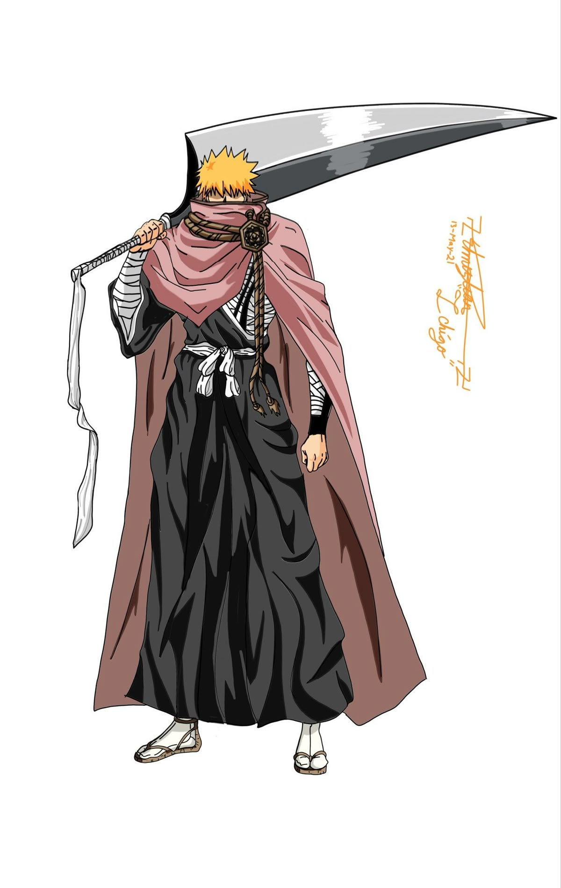
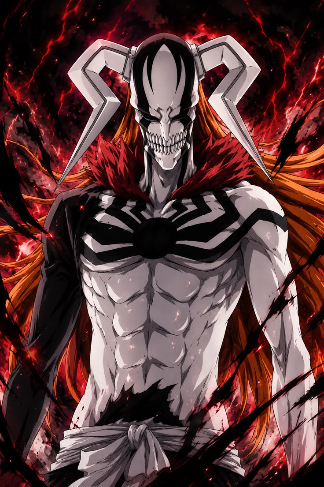
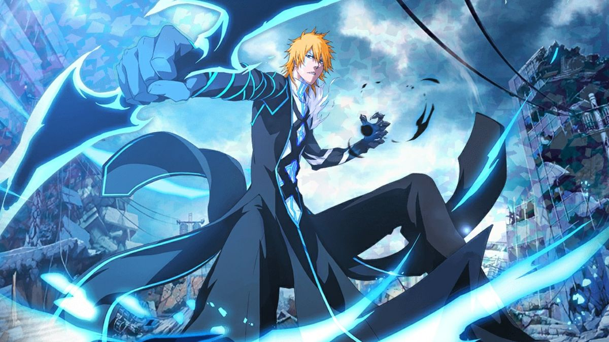
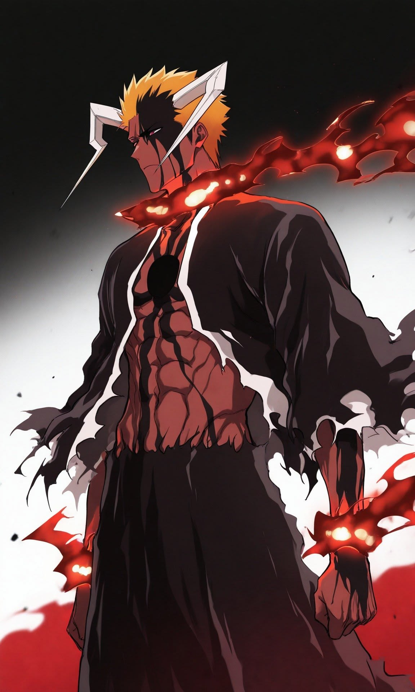

| Agent of the Shinigami arc | Zanpakutō Unknown Tales arc | Beast Swords arc | Arrancar: Downfall arc | Gotei 13 Invading Army arc | Thousand-Year Blood War: The Blood Warfare arc |
|---|---|---|---|---|---|
| (Episodes 1–20) | (Episodes 230–255) | (Episodes 256–265) | (Episodes 266–316) | (Episodes 317–342) | (Episodes 367–379) |